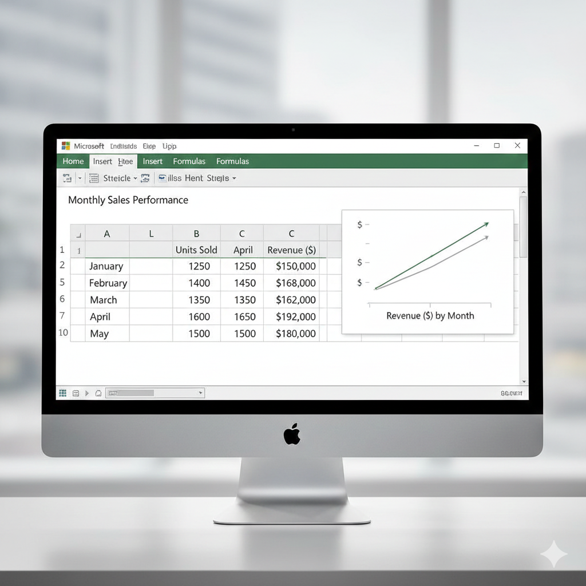

En la práctica, la mayoría de los datos que analizarás no serán creados directamente dentro de R, sino que estarán almacenados en archivos externos como archivos de texto (.txt), valores separados por comas (.csv) o hojas de cálculo de Excel (.xls, .xlsx). Para trabajar con ellos, el primer paso es acceder a esa información y cargarla en R para convertirla en un data frame.
| Extensión (tipo de archivo) | Función en R | ¿Por qué usarla? |
|---|---|---|
Archivo de texto |
read.table() |
Es muy flexible con espacios y tabuladores. |
Comma Separated Values |
read.csv() |
Configurada por defecto para separar por comas. |
Archio de Excel |
read_excel() |
Requiere el paquete readxl (maneja
archivos binarios). |
Para importar datos correctamente, asegúrate de que el archivo esté en la misma carpeta que tu proyecto o indica la ruta completa.
read.table("archivo.txt")Un archivo “table” o de texto es un archivo plano que puedes abrir con el Bloc de Notas.
Ejemplo de estructura de un archivo .txt:
Nombre Edad Sueldo
Juan 25 1500
Ana 30 2200
Nota: Normalmente los archivos .txt están separados por un
espacio. Si usas tabulaciones en vez
de espacios, añade: sep = "\t"
misdatos_txt <- read.table("empleados.txt", header = TRUE, sep = "\t")Los argumentos más utilizados de read.table:
header: indica si el fichero tiene
cabecera (TRUE/FALSE).sep: carácter separador de columnas
(por defecto espacio en blanco).dec: carácter decimal (por defecto
".").read.csv("archivo.csv")Un archivo .csv es un archivo de tevto separado por comas o por punto y comas. Se recomienda exportar desde Excel a CSV antes de leer en R, ya que son archivos que pesan y ocupan menos.
Ejemplo de estructura de un archivo .txt:
Nombre,Edad,Departamento Juan,25,Ventas Ana,30,Marketing Luis,45,Ingeniería
read.csv es más directo porque asume que el separador es
una coma. Utilizar read.csv2 si el archivo fue guardado
desde un Excel en español
#misdatos_csv <- read.csv("empleados.csv", header = TRUE)Otras funciones disponibles:
read.delim(file, header = TRUE, sep = "\t", dec = ".")
read.delim2(file, header = TRUE, sep = "\t", dec = ",")read.excel("archivo.xls")Un archivo .xls es un archivo creado con Excel.

Requiere instalar el paquete:
install.packages("readxl")
# Requiere instalar el paquete: install.packages("readxl")
library(readxl)
datos_excel <- read_excel("empleados.xlsx")Consejo Pro: Si vas a compartir tu código, coloca
install.packages("readxl")como comentario al inicio. Esto ayudará a otros usuarios a saber qué dependencias necesitan instalar antes de ejecutar tu script.
Otro ejemplo:
# datos <- read.table("Vigo2017.csv", header = TRUE, sep = ";", dec = ",")
head(datos)
summary(datos)En algunos ficheros los valores ausentes están codificados (p. ej.,
-9999). Se puede indicar con el argumento
na.strings:
# datos <- read.csv2("Vigo2017.csv", na.strings = "-9999")
head(datos)tipo <- c("A", "B", "C")
longitud <- c(120.34, 99.45, 115.67)
datos <- data.frame(tipo, longitud)
write.table(datos, file = "datosPractica2.txt")
write.csv2(datos, file = "datosPractica2.csv")